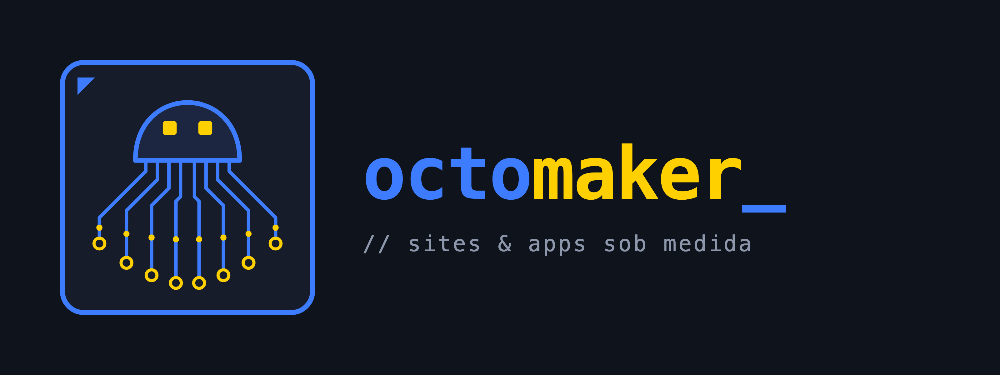
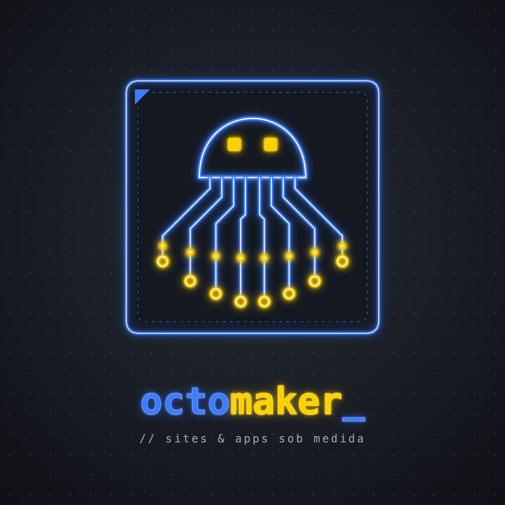
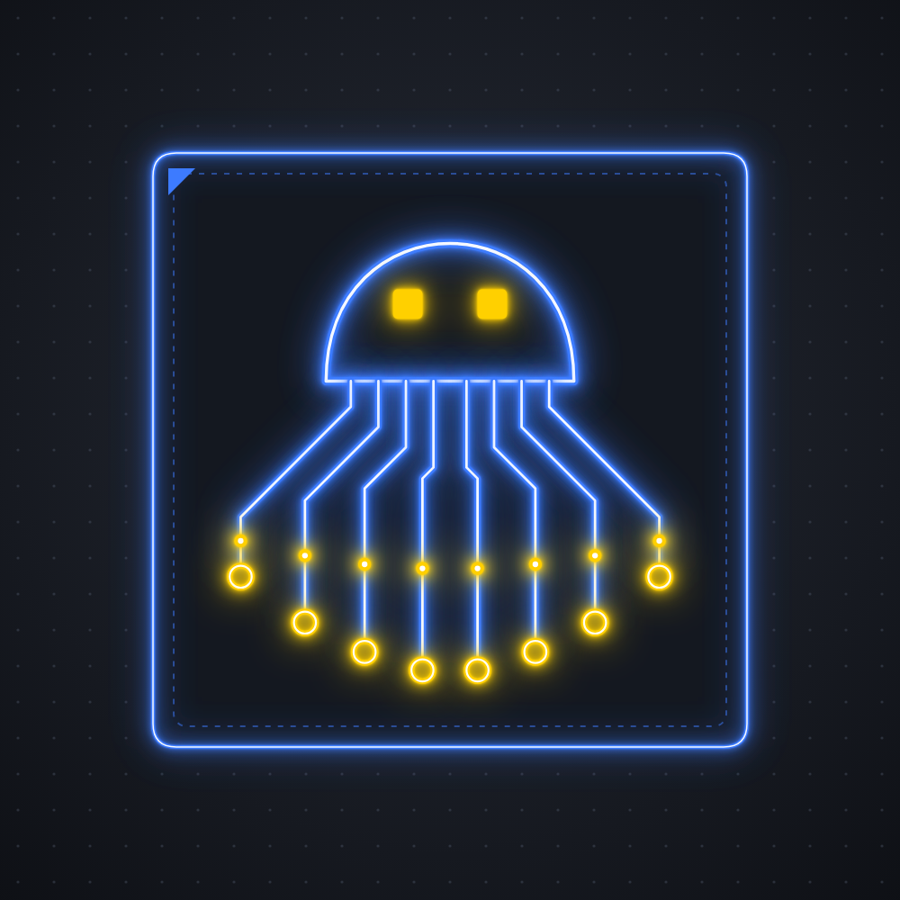
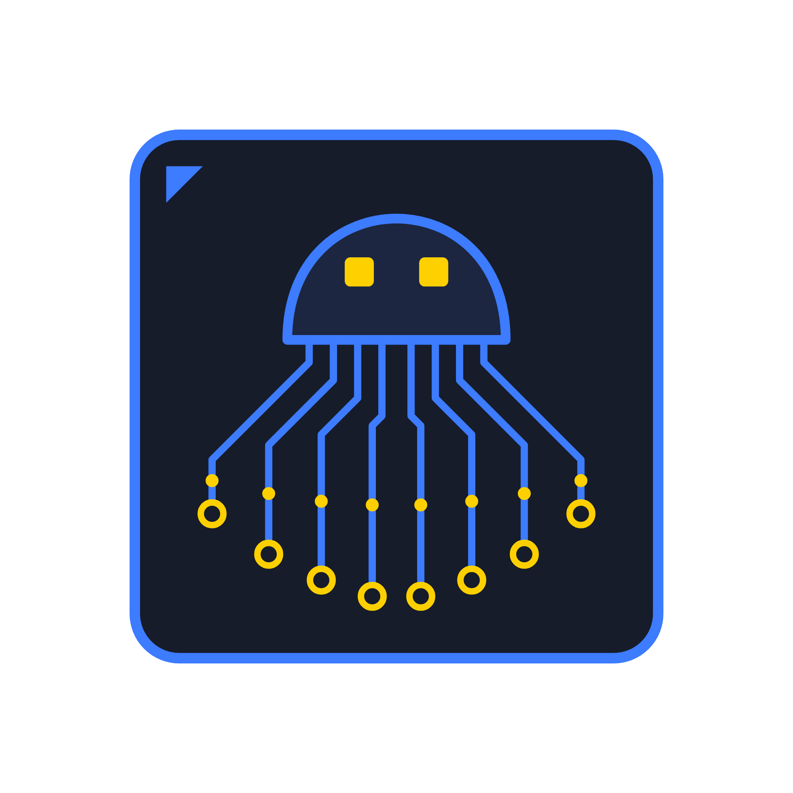

Sites profissionais para pequenas empresas.
A OctoMaker cria sites e aplicativos para quem precisa de presença online sem complicação. Cuidamos do design, do código, da hospedagem e do suporte. O cliente foca no próprio negócio.
O polvo
Oito pernas trabalhando ao mesmo tempo. Representa uma equipe que resolve várias partes do projeto em paralelo.
O chip
O polvo fica dentro de um chip azul em neon. Ele é o núcleo: tudo que o cliente precisa sai de um lugar só.
Para quem
Nutricionistas, psicólogos, consultórios, pequenas lojas, estúdios e prestadores de serviço.
Versões do logo
Use sempre os arquivos da pasta marca/logo. O logo foi feito para fundos escuros.

Principal
Posts, apresentações e materiais quadrados.

Ícone
Foto de perfil em redes sociais e WhatsApp.
Horizontal
Cabeçalho do site, capas, assinatura de e-mail.

Símbolo
Marca d'água e aplicações sobre fotos. Fundo transparente.
Mini
Versão simplificada para favicon, rodapés e tamanhos abaixo de 48 px.
Moeda 3D
Versão interativa para sites: frente com o polvo, verso com o nome. Arraste para girar. Arquivo portfolio/assets/octomaker-coin.js.
Regras de uso
- Deixe um espaço livre ao redor do logo igual à altura dos olhos do polvo.
- Abaixo de 48 px use a versão Mini. Logo principal: mínimo de 160 px de largura.
- Aplique sobre grafite ou preto. Em fundo claro, use o símbolo com o bloco escuro.
Não fazer
- Trocar as cores do polvo ou do chip.
- Esticar, girar ou distorcer.
- Remover o brilho neon ou colocar sombra.
- Mudar a fonte do nome.
Paleta de cores
Base escura em grafite, azul elétrico como cor principal e amarelo sinal para destaques e chamadas.
#3D7BFF · rgb 61 123 255Cor principal. Logo, títulos, links.#FFD000 · rgb 255 208 0Destaques, botões de ação, detalhes.#0E1015 · rgb 14 16 21Fundo principal.#262B36 · rgb 38 43 54Cards, blocos e superfícies.#8D97AB · rgb 141 151 171Textos secundários.#EEF2F8 · rgb 238 242 248Textos principais sobre o escuro.Duas fontes, ambas gratuitas
JetBrains Mono · títulos e destaques
Aa Bb Cc Dd Ee Ff Gg 0123456789 {}</>
Fonte de programador. Use em títulos curtos, rótulos, números e no prefixo //.
Inter · textos
Aa Bb Cc Dd Ee Ff Gg 0123456789
Fonte limpa e fácil de ler. Use em parágrafos, legendas e botões.
Baixe em fonts.google.com. No Canva, as duas fontes já estão disponíveis.
Detalhes que dão identidade
Neon
Brilho azul e amarelo com núcleo branco, nítido e sem exagero no desfoque.
Pontos de sinal
Anéis e pontos amarelos, como nas pernas do polvo.
Grade de pontos
Textura de fundo leve, como uma placa de circuito.
Código
Prefixo // em rótulos e cursor _ no fim de títulos.
Simples e direto
Falamos com donos de pequenos negócios. Eles querem saber o que vão receber, quanto tempo leva e como isso ajuda a conseguir clientes.
Frases curtas
Uma ideia por frase. Sem enrolação.
Fale do resultado
Mais clientes, mais agendamentos, mais confiança. O cliente não precisa entender de tecnologia.
Sem jargão
Troque termos técnicos por palavras do dia a dia.
A marca no dia a dia
(00) 00000-0000
@octomaker_